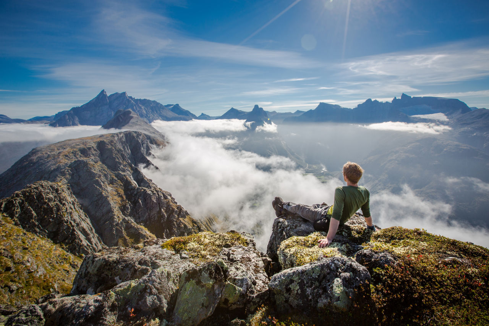

Explore Hiking Adventures in Norway
Hiking in Norway brings peace, a sense of connection to nature, and stunning views. From towering mountains to serene fjords, there’s an adventure for everyone.
Why Go Hiking?
- Hiking provides a break from the digital world.
- Hiking improves physical and mental health.
- Hiking helps you explore local culture and nature.
- Hiking offers breathtaking landscapes and unforgettable experiences.
Photo Gallery
Here are some of the most attractive views you can experience while hiking in Norway:



Top Hiking Destinations in Norway
Norway is home to countless trails, but here are some of the most popular ones:
Significant Tips for Hikers
Here are some tips to make your hiking adventures safe and enjoyable:
- Before you leave, check the weather forecast.
- Wear proper hiking clothing and shoes.
- Stay prepared and carry a map, compass, water, and first-aid kit.
- Abide by designated pathways and respect nature.
Resources and Further Reading
Plan your hiking adventures in Norway with these useful resources: